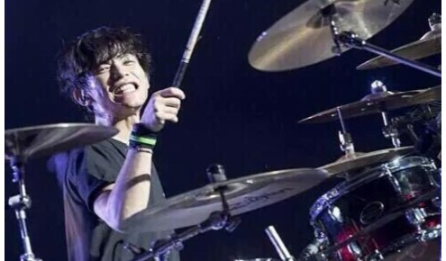

Shintaro
真太郎。ドラム担当。TAKUYA∞にドラムの腕前を気に入られ、彰と共にスカウトされたことがきっかけでUVERworildに加入することとなった。ライブでのMCやラジオ番組で下ネタ発言をするなど、自他共に認める変態キャラであるが、本来は非常に落ち着いた性格の持ち主でもある。メンバーや昔からの知り合いからは「実はマジメ」と言われている。しかし本人はキャラを徹底しており否定している。
Akira
彰。ギター担当。真太郎とは同級生で、TAKUYA∞とは家が向かい同士だった。当時は別のバンドに所属しており、そのバンドのライブを偶然目撃したTAKUYA∞が、そのギターの技術に惚れ込み、SOUND極ROAD（UVERworildの改名前）の結成直前にTAKUYA∞から電話で直々にスカウトされ、二つ返事で加入した。単独や共作も含めて作曲を担当することも多く、TAKUYA∞と一緒に作曲をする事も少なくない。